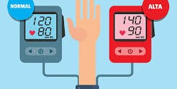

Hipertensión
La hipertensión es cuando la sangre empuja con demasiada fuerza las paredes de tus arterias, como una manguera a punto de reventar. En México se está así porque se come en exceso la sal (en los embutidos, panes y chatarra), casi no se toma agua y el estrés de la vida diaria los mantiene acelerados. El gran problema es que es una enfermedad silenciosa: no duele ni avisa, pero si no la controlas, te acaba provocando un infarto o un derrame cerebral.
El problema es que en México no nos checamos la presión a menos que nos sintamos mal, y para cuando duele la cabeza o te mareas, el daño en las arterias ya tiene años. A eso súmale que el consumo de alcohol y cigarro en las fiestas es parte de la cultura, lo que dispara la presión sin que nadie lo note. Vivir con la presión alta sin control es como caminar con una bomba de tiempo interna que desgasta tu energía y te mantiene en un estado de alerta constante, aunque no lo sientas. Este daño silencioso te roba la tranquilidad, limitando poco a poco tu capacidad física y obligándote a depender de medicamentos de por vida para evitar un evento fatal. Termina transformando a una persona activa en alguien que vive con el miedo constante a un infarto o un derrame cerebral.

Para evitar esta enfermedad se recomienda:
- No ponerle más sal a la comida que ya está preparada.
- Evita el jamón, salchichas y latas, porque tienen muchísima sal oculta para conservarse.
- Acude a la farmacia a medirte la presión cada mes.